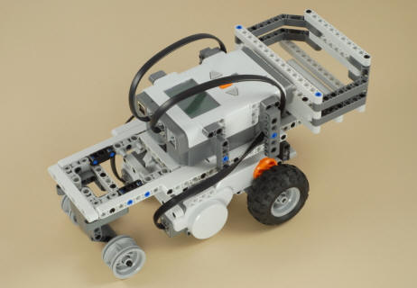
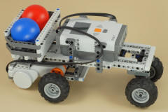
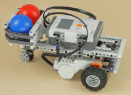
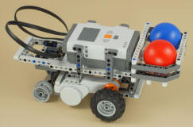
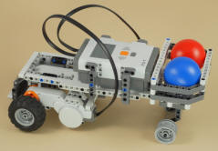
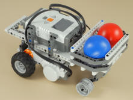
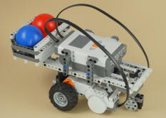

Fun Projects for your LEGO� MINDSTORMS� NXT!
|
|
Fun Projects for your LEGO� MINDSTORMS� NXT! |
| Modular Test Vehicle (MTV) |
|

| The Modular Test Vehicle consists of five different
modules that can be built separately.
Note: The Frame module has two
versions of the instructions, depending on whether you are using AA
batteries or the Li-Ion rechargeable battery pack.
|
||||||||||||||||||||||||||||||||||||
|
Once you have built the five MTV modules, you can snap them together any way you want to make a complete vehicle. Note that no extra pegs are required to assemble the modules. The modules have the pegs built-in, and the frame has a number of attachment points ready to go. It is then also easy to pull the modules apart and reassemble them in a different way, so you can quickly experiment with several combinations to compare how well the resulting robots work. Once you have snapped the modules together, you should use two wires to connect the two drive motors to ports B and C on the NXT. If you want, you can try routing the wires around parts of the robot to keep them out of the way, as shown below.
 |
|
There are hundreds of
different ways you can assemble the MTV modules into a complete robot,
and each different configuration will perform differently. Some
will go straighter, others will turn better, some will carry heavier
loads better, and some will be more consistent and accurate. A few
ideas to get you started are shown below. |
|  |  |  |
|
Rear wheel drive, rear engine, |
Front wheel drive, mid engine, rear castor wheel, medium wheelbase, rear payload. |
Front wheel drive, mid engine, straight rear wheels without tires, short wheelbase, front payload. |
|  |  |  |
|
Rear wheel drive, mid engine, straight front wheels without tires, long wheelbase, front payload. |
Rear wheel drive, mid engine, straight front wheels without tires, medium wheelbase, front payload. |
Rear wheel drive, mid engine, front castor wheel, short wheelbase, rear payload. |
|
The Drive Wheels module is designed to make it easy to change the gears used so that you can experiment with different gear combinations. Different combinations will result in different gear ratios, which will have a big effect on the speed and power of your robot. The faster gear combinations will make the robot go faster but have less power, which will make it harder to turn and carry loads, and note that faster robots are also typically less accurate. Five different gear ratios
are possible in the Drive Wheels module as shown below:
* Note that the Medium speed gear combination requires a total of four 16 tooth gears, but the Retail version of the NXT kit by itself has only two of these gears. Changing GearsYou can change the gears used in the Drive Wheels drive module without taking the whole thing apart if you do it as follows. This requires careful hands, but if you can do this then maybe you could be a mechanic for a race car team, as they are often required to crawl under the car to change out the gears to adjust the speed of the car!
Note: With the faster gear combinations, you will be able to turn a wheel by hand and see the gears turn, but on the slower gear combinations there will be too much resistance and the axle will just twist.Important:
When you change the gear ratio of your robot, you will also likely need
to change the program to adjust the number of degrees or rotations
specified for your Move blocks, because the robot will be moving more or
less for a given amount of rotation of the motors. See the
programming section below.
|
| MTV Programming Two very simple programs are provided to get you started with testing your MTV robots. You can also write your own test programs to do whatever you want. When testing for mechanical performance, it is good to keep the program as simple as possible to avoid introducing more questions.
When you are making changes to the robot or the program, be sure to make only one change at a time before testing it again. That way, you won't get confused about what caused a difference that you see. |
|
One design issue that you will definitely want to experiment with is that of weight balance, and the MTV is designed to make it easy to experiment with this. The weight balance of a robot refers to what percentage of the robot's total weight is over the drive wheels, as opposed to the remaining percentage that is over any non-motorized rolling wheels or sliding parts. Weight balance can have a huge impact on the performance of a robot, especially its ability to turn well and turn accurately and consistently. Many teams that build robots for FIRST LEGO League, for example, have turning problems (such as stalling in a turn or inconsistent turn angles) that are ultimately caused by poor weight balance. The resulting turning problems may only happen sometimes (due to variations in friction on the surface, different weights being carried, battery charge level, etc.), leading the teams to suspect problems with their programs or unknown gremlins in the NXT, when in fact the real problem often lies with the robot chassis design. You can measure the actual
weight balance of a robot by doing two measurements with a small scale
as shown in the examples below, but you don't need a scale to do
experiments with weight balance. Without a scale, you can get a
rough idea of the weight balance of your robot by putting the robot on a
flat surface and then alternately lifting just the front or back of the
robot with your hand to see which side feels heavier. And even if
you can't easily guess the approximate balance of the robot, the MTV
frame is designed to make it easy to shift the modules back and forth to
get more or less weight over the drive wheels, so just try making
changes in one direction then the other and see which turns out better.
Getting a Good Weight BalanceSo, what is a good weight balance to shoot for? Well, it depends on how your robot is built and what you need your robot to do, and there are some trade-offs, so you will need to experiment. Race cars (which turn by pivoting the front wheels) typically shoot for a weight balance of 50%, but for an NXT robot that turns by changing the speed and direction of two drive motors, you will typically want a weight balance of more than 50% over the drive wheels. You may be able to go as high as say 80-90%, but this may make the robot unstable (it might pop a wheelie or tip over when changing speed or direction suddenly). It also might affect the robot's ability to go straight accurately. |
||||||||
Challenges
|
|
Copyright
�
2007-2009 by Dave Parker. All rights reserved. |